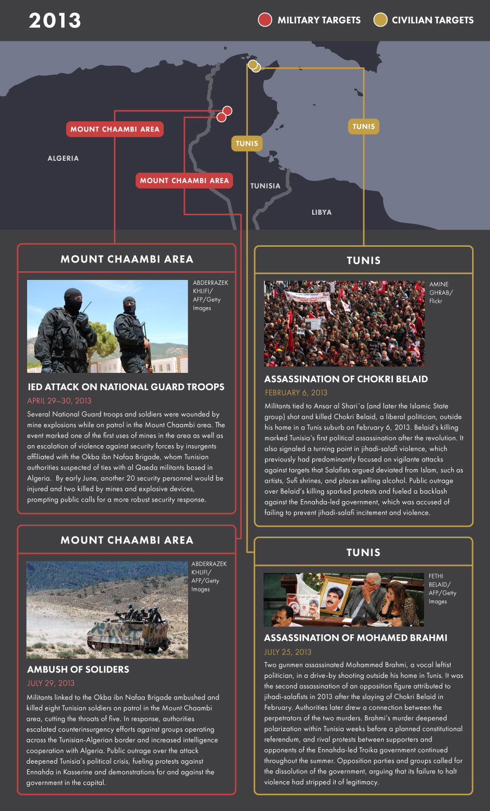
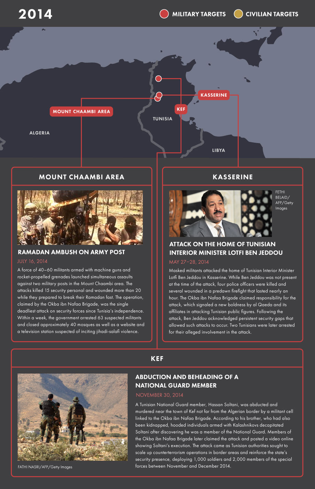
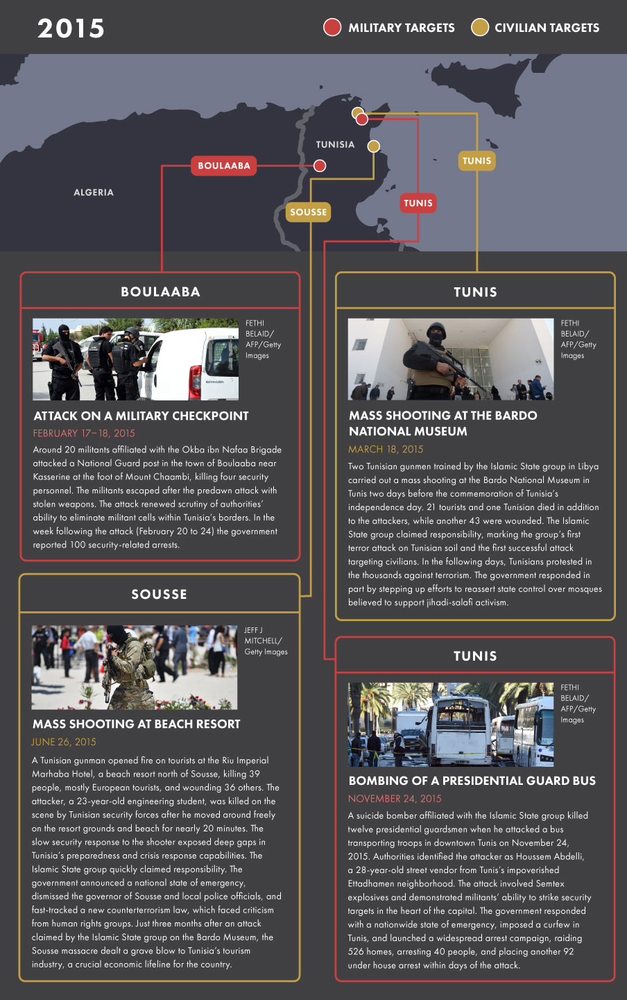

An Evolving Threat
Tunisia is in the crosswinds of overlapping local, regional, and global jihadi-salafi trends that have triggered waves of violence and terrorism on its soil since 2011. Jihadi-salafism was not a new phenomenon in Tunisia at the time of the revolution, but it had been repressed and largely dormant for most of the prior decade despite high-profile attacks in 2002 and 2006. Ben Ali’s security forces jailed thousands of suspected jihadi-salafists along with other dissidents and political Islamists, including those who did not employ violence. Constant security operations and monitoring prevented jihadi-salafists from actively organizing.
However, Ben Ali’s sudden flight from the country in January 2011 and the swift collapse of the regime created both uncertainty and insecurity. A series of interim governments replaced the interior minister who oversees the police, forced out 23 security chiefs, and vowed to investigate police abuses. Police and internal security forces came under public scrutiny and were widely blamed for perpetrating decades of abuses. The security regime built by Ben Ali was unraveling. The contested political, ideological, and security space that emerged in its wake benefited jihadi-salafists in a number of ways.
The security regime built by Ben Ali was unraveling. The contested political, ideological, and security space that emerged in its wake benefited jihadi-salafists in a number of ways.
In an effort to break with the past, the new government released hundreds of political prisoners, including jihadi-salafists, in February 2011. Many others returned from exile abroad. These activists soon began preaching and operating openly with little government interference. They also created new organizations, the largest of which, Ansar al Shari`a, was led by veterans with ties to al Qaeda who had fought in Afghanistan, Chechnya, and Iraq.
Instead of directly confronting the state as al Qaeda–linked groups had done elsewhere, Ansar al Shari`a focused primarily on recruitment, organization, and da`wa, or proselytization, throughout 2011 and 2012. While its leaders accepted al Qaeda’s broader goal of creating a state governed by a puritanical form of Islam, they argued that Tunisia was a land of da`wa, not a land of jihad. Jihadi-salafi violence during this period was generally confined to intimidation and vigilante violence aimed at individuals, businesses, and Sufi shrines that offended their religious and social worldview. The time was not ripe for confronting the state. Meanwhile, Tunisia’s Islamist Ennahda-led government (also known as the Troika because it was a coalition of three political parties), which entered office in November 2011, demonstrated ambivalence towards jihadi-salafi activism.
While its leaders accepted al Qaeda’s broader goal of creating a state governed by a puritanical form of Islam, they argued that Tunisia was a land of da`wa, not a land of jihad. Jihadi-salafi violence during this period was generally confined to intimidation and vigilante violence aimed at individuals, businesses, and Sufi shrines that offended their religious and social worldview.
Jihadi-salafists inspired many young people with their simple messages. Although they were not directly active in the early demonstrations of December 2010 that led to Ben Ali’s downfall, they spoke to the frustrations and problems that propelled the youth-led uprisings. They provided simple answers to complex problems and created outlets for individuals to pursue a wide range of personal and communal activities that fit different needs. During the same period, the Syrian conflict intensified, drawing growing global attention and the first waves of foreign combatants inspired to fight the Assad regime. Hundreds, and then thousands, of Tunisians answered the call. By 2013, an estimated 2,000 Tunisians had flocked to Syria, making Tunisians one of the largest groups of foreign jihadi fighters in Syria. At the time, many salafi and jihadi-salafi preachers, as well as more mainstream imams affiliated with Tunisia’s government, encouraged jihad in Syria. The ease of travel to Syria via Turkey also made reaching jihadi groups relatively straightforward. Yet, despite jihadi-salafi activism, open recruitment, and broad support for fighting the Assad regime in Syria, Tunisia remained largely free of terrorist violence. A turning point came with an attack on the U.S. embassy in Tunis on September 12, 2012, which foreshadowed the risks of jihadi-salafists’ growing assertiveness. Violence worsened and took on new forms in the months ahead.
Understanding Salafism and Jihadi-salafism Salafism is a broad movement of Muslim reformers who seek to return to what they regard as the authentic practice of the first three generations of Muslims (salaf) who lived in the seventh and early eighth centuries. Salafists rely on the Qur’an and Sunna (or prophetic traditions) as the foundation of Islamic law and practice. Their beliefs emphasize tawhid or the unity of God, and reject cultural practices not specifically sanctioned by Islamic law as superstitious and a deviation from “true Islam.” While traditional North African Islam has a distinct set of traditions based on the region’s unique culture, salafism seeks to purify religious thought and practice from cultural and historical adaptations and create a homogeneous set of religious beliefs and practices. Tunisia’s salafi community is relatively small—estimated in 2013 at 50,000 out of a population of 11 million. Although all salafists are united in their goal of establishing states governed by Islamic law, they are often divided over the best strategy to achieve that goal. Scripturalist salafists, also sometimes called scientific salafists, focus primarily on spiritual outreach, charity, and education as ways to prepare society for a religious state. Political salafists actively contest modern elections and see participatory politics as an important avenue for passing religiously-inspired legislation. Most salafists argue for obedience to Muslim rulers, including authoritarian ones, and oppose violence against Arab or Muslim governments because they believe that rebellion is harmful to the umma, or Muslim community. A strain of salafists, however, has emerged over time that embraces violence and articulates that violence as jihad. These jihadi-salafists emphasize takfir—that is, accusing other Muslims of apostasy—which they employ to justify violence against Muslim populations and Muslim rulers. This third category of salafists spawned movements such as al Qaeda and the Islamic State group (ISG), which use violence to seek the overthrow of governments and the reestablishment of an Islamic caliphate. While al Qaeda and the Islamic State group have been deeply divided over the proper strategy to achieve their goals, they share the same objective of waging a violent struggle in order to revive the caliphate. Each of these three broad categories contains more subgroupings and fissures. Moreover, the lines between the categories have grown increasingly blurry, as some scripturalist and jihadi streams have adopted political activism to spread their message. Salafism is often misused synonymously with Wahhabism. Wahhabism is a particular revivalist movement within salafism that originated with the followers of Muhammad ibn Abd al-Wahhab in the Arabian Peninsula in the 18th century. Wahhabism later gained global traction through its control of the religious system in Saudi Arabia, which helped spread its teachings to Muslims across the globe. While those who follow Wahhabism are typically salafists, not all salafists are Wahhabists. Salafism, in both its violent and nonviolent forms, represents a rebellion against local Islamic traditions and practices and their relationship to political systems. Although salafi interpretations have competed with North African Islamic traditions for centuries, this struggle has intensified since the Arab uprisings of 2011.
Beginning in late 2012, militant cells operating in the remote Mount Chaambi region on the Tunisian-Algerian border launched a violent campaign ambushing military patrols and National Guard forces. The area of militant activity in the western mountains includes Chaambi National Park, which encompasses Mount Chaambi, Tunisia’s highest peak, which sits between the town of Kasserine and the Algerian border. The area is also home to other mountaintops where militant groups operate, including Mount Sammama and Mount Selloum near Kasserine.
The group leading these attacks from late 2012 calls itself the Okba ibn Nafaa Brigade, a constellation of cells linked to al Qaeda in the Islamic Maghreb (AQIM), al Qaeda’s main franchise in North Africa which is based primarily in Algeria. The size of the Okba ibn Nafaa Brigade is difficult to assess. According to Tunisian sources, 80-100 hardened fighters are camped out on several mountains along the Algerian border. In 2014, a cell in the Kasserine district made up of approximately several dozen fighters split from the Okba ibn Nafaa Brigade and pledged allegiance to the Islamic State group. This cell called itself Jund al-Khilafa, or “Soldiers of the Caliphate.”
The mountainous terrain and dense forests provide ample cover to conceal militant camps as well as mines and IEDs. Moreover smugglers and sympathetic local populations often provide food, water, and other supplies to militants. This combination of terrain and ample supply networks, including from across the border in Algeria, makes eliminating militant cells an arduous and ongoing task.
As violence against security forces intensified in rural areas, Ansar al Shari`a was implicated in a series of political assassinations in Tunis in 2013. Tunisia’s Ennahda-led Troika government found itself dealing with both rural and urban violence accompanied by mounting criticism of its inability to provide security and economic growth. Meanwhile, growing numbers of young Tunisians were joining militant groups in Syria and neighboring Libya, where jihadists took advantage of a political and security vacuum to operate freely.
By the summer of 2013, the government designated Ansar al Shari`a a terrorist organization, curtailing its ability to operate openly in Tunisia. Much of its leadership regrouped in Libya, where some shifted allegiance to the Islamic State group. In Tunisia, Ansar al Shari`a’s continued appeal and networks provided an infrastructure for cells and recruiters to continue luring new recruits into jihadi-salafist groups, despite the barriers.
In Tunisia, Ansar al Shari`a’s continued appeal and networks provided an infrastructure for cells and recruiters to continue luring new recruits into jihadi-salafist groups, despite the barriers.
A public backlash against the government’s failure to suppress violence triggered a political crisis that almost ended in disaster. Instead, mediation and dialogue between key political actors including Ennahda leader Rachid al-Ghannouchi and elder statesman Béji Caïd Essebsi, who had served as interim prime minister in 2011, ensured a peaceful transfer of power in December 2013 from the Troika to a technocratic government that refocused resources on counterterrorism efforts. Yet despite these political compromises, insecurity in Tunisia deepened throughout 2014. Insurgent attacks in the west grew more lethal, and the number of Tunisian military and security personnel killed in confrontation with militants nearly doubled from 2013 to more than 30 in 2014.
Before long, in early 2015, the Islamic State group struck Tunisia hard. ISG gunmen reportedly trained in Libya hit two tourist targets in high-casualty attacks. The first attack hit the Bardo National Museum in Tunis in March. The second hit a beach resort near the seaside town of Sousse in June. All told, the two attacks killed more than 61, mostly European tourists. Tunisia had just entered a new phase of jihadi-salafi violence.
Although the Islamic State group lacks a fixed base in Tunisia, it has made use of porous borders with Libya to funnel recruits out of the country and smuggle arms and attackers (mostly Tunisians) back in. In contrast to Okba ibn Nafaa Brigade cells, which have primarily targeted security forces, the Islamic State group has focused its attacks on major cities and tourist sites in an effort to undermine Tunisia’s security and economy, which relies heavily on tourism. The group has demonstrated growing boldness in its attacks on Tunisian soil, including by bombing a bus carrying presidential guard forces in downtown Tunis in November 2015 and mounting a brazen assault by several dozen fighters on the town of Ben Guerdane near the Libyan border in March 2016.
Tunisia’s security threats are likely to persist in the near term as long as the domestic ingredients for radicalization remain present and protracted foreign conflicts continue drawing Tunisian combatants. The question Tunisia’s leaders face now is how the threat will continue evolving, and how they can adapt to meet it.
Progression of Violence in Tunisia
This map series tracks significant terrorist attacks and acts of political violence in Tunisia by year from 2013 through May 2016. Attack locations and details are compiled from local and international media reports and public announcements by Tunisian security agencies. The limitations of open sources mean that locations for some attacks, including those in the Mount Chaambi area and other remote mountainous enclaves, are general approximations. This map includes lethal clashes between security personnel and militants arising in the course of counterrorism operations, but excludes low-level violence triggered by social protests and demonstrations.
Zoom in for greater geographic detail or out for a broader view of Tunisia’s position in the region. A series of static maps below provide further context on select significant attacks which took place in each year during the reporting period.
2013: Tunisia, Land of Jihad
Political violence and insurgent activity in Tunisia spiked in 2013 after a period of simmering, largely nonlethal violence in 2011 and 2012. Three important shifts occurred in 2013.
First, Ansar al Shari‛a in Tunisia, the country’s most prominent jihadi-salafi movement, shifted from committing acts of vigilante violence to targeting politicians associated with progressive views, first in February and again in July. These acts represented a departure from earlier claims by Ansar al Shari`a leaders that the movement was committed to da`wa rather than violence. This shift left no doubt that jihadi-salafists had launched a new phase in their approach to violence directed at government and security targets within Tunisia.
In August, the Tunisian government designated Ansar al Shari‛a a terrorist movement, forcing much of the group’s leadership to flee the country and relocate to Libya. Despite the crackdown, the organization continued to operate underground in the country.
Second, insurgents on the Tunisian-Algerian border led by the AQIM-affiliated Okba ibn Nafaa Brigade, accelerated the frequency and lethality of its attacks. The Okba ibn Nafaa Brigade and other militants pursued an aggressive campaign of mine explosions and ambushes, mainly against Tunisian army and National Guard patrols in the western mountainous border regions, and in July they beheaded several soldiers.
Third, the seemingly unchecked recruitment of young Tunisians to jihadi-salafi groups in Syria drew public outrage over the government’s failure to block aspiring fighters from leaving the country. Authorities began restricting travel by young people early in the year, but Tunisia’s government struggled to develop a clear strategy for confronting recruitment or dealing with fighters beginning to return home to Tunisia.
The combination of mounting urban political violence sparked by jihadi-salafists, a growing insurgency against security forces in rural areas, and the continued disappearance of young Tunisians to foreign war zones fueled a broad public backlash against the Ennahda-led Troika government. The government resigned in December in the face of growing opposition and a deteriorating security environment, and its leadership agreed to hand power to an unelected caretaker government, a move that likely spared Tunisia greater civil unrest.
2014: Rising Stakes
Tunisia’s caretaker technocratic government prioritized security upon entering office in January 2014. It sought additional external military aid and launched a series of counterterrorism operations against militant groups soon after assuming power. While urban jihadi-salafi violence ebbed in the wake of a security crackdown, the rural insurgency continued to gather momentum. Amid mounting public concern, the government escalated its efforts to confront violence and incitement throughout the year, with little success.
A series of high-profile attacks revealed gaps in Tunisia’s counterterrorism capabilities and signaled a new level of boldness in militants’ operations, despite the government’s more focused counterterrorism efforts. In May, a cell affiliated with the Okba ibn Nafaa Brigade attacked the home of Interior Minister Lotfi Ben Jeddou in the Kasserine region, killing four guards. In July, insurgents killed 15 soldiers in an ambush in the Mount Chaambi area, marking the bloodiest single day for security forces since Tunisia’s independence. Two other notable terror incidents marred November, including the killing of five soldiers in an attack in Kef and the kidnapping and decapitation of a National Guard member in the same governorate near the Algerian border.
Tunisia’s caretaker government intensified its efforts and sought to upgrade counterterrorism and police operations. The government claimed 2,700 terror-related arrests in the first 11 months of 2014, double the total number of terror related arrests in 2013. It continued training efforts to reorient its security forces to counterterrorism operations, including through cooperation with the United States and other Western governments. Tunisia also forged more robust counterterrorism links with neighboring Algeria, boosting border security cooperation, establishing military-to-military communications, and creating mechanisms for information sharing.
The government’s campaign to counter radicalism extended not only to hard security operations, but also to redoubled attempts to shut down recruitment in mosques and preaching that advocated violence. A new constitution approved in January reinforced the government’s mandate as the “guardian of religion,” paving the way for more aggressive efforts to regain control of mosques and religious discourse.
2015: Enter the Islamic State Group
Tunisia’s struggle with terror entered a new phase in 2015 as the Islamic State group established its presence in the country. Tunisian jihadists trained by the Islamic State group in Libya launched a succession of devastating attacks in the spring, summer, and fall aimed at undermining the country’s security and economic lifelines, especially its tourism revenues. In March, two gunmen reportedly trained in Libya killed 21 tourists and one Tunisian in a shooting spree in Tunis’s Bardo Museum. In June, a gunman believed to have been trained with the Bardo attackers in Libya killed 39 people, mostly European tourists, in a mass shooting at a beach resort in Sousse. In November, a Tunisian suicide attacker killed 12 members of the presidential guard in downtown Tunis with explosives that authorities later claimed were smuggled from Libya.
Meanwhile, rural insurgents remained entrenched in mountainous areas, and alleged ISG affiliates asserted their presence in Tunisia’s interior by decapitating a teenager near Sidi Bouzid whom they accused of cooperating with police. According to the Ministry of Defense, authorities discovered 79 militant camps in rural Tunisia in 2014 and 2015, with the highest concentration in the western mountainous enclaves. Security operations expanded and intensified under the Nidaa Tounes–led government, which assumed power in February 2015 after elections in late 2014. A counterterrorism law that was passed overwhelmingly in July 2015 granted security forces broad powers to arrest and detain suspects, and the number of terror-related arrests approached 3,000 by November, surpassing the figure for the same period in 2014.
Growing insecurity in Libya and the threat posed by returning Tunisian fighters prompted the government to take new measures to increase border security. Within weeks after the Sousse attack, the government announced plans to build a wall spanning key stretches of the Libyan-Tunisian frontier. Tunisia also expanded military and counterterrorism training and capabilities through new equipment and deepened cooperation with regional and international partners, including the United States, which designated it a major non-NATO ally. But the onslaught from jihadi-salafists continued.
2016: Border Breakdown
In March 2016, Tunisian militants launched their boldest attack on Tunisian soil to date with simultaneous assaults on multiple security installations in the town of Ben Guerdane near the Libyan border. A force of nearly 50 fighters crossing the border from Libya linked with sleeper cells in the town and attacked numerous security sites and personnel. The ISG militants sought to rally the local population to join in the assault, though few if any responded. The main attack was preceded by earlier clashes between security forces and militants in areas near the Libyan frontier, and was executed despite authorities’ increased efforts to secure Tunisia’s borders. Tunisian forces pursued and confronted militants fleeing the area for several days after the main attack.While Tunisian forces had implemented lessons from previous assaults, and trained military units to improve their response, these attacks highlighted the limits of Tunisia’s counterterrorism and border security policies and the intensity of a morphing cross-border threat from Libya. With assistance from Western partners, Tunisia has pressed ahead with efforts to secure its border with Libya by digging a trench and berms across the frontier and started constructing a border security system including electronic surveillance with U.S. and German assistance, although the full outfitting of the system was still in progress as of mid-2016.
The Ben Guerdane attack and its aftermath raise questions about the Islamic State group’s strategic intentions and capabilities vis-à-vis Tunisia, and equally pressing ones about Tunisian authorities’ ability to respond. Meanwhile, the group’s use of numerous sleeper cells within Ben Guerdane and coordination across the border with militants in Libya underscored Tunisia’s vulnerability to Libya’s political and security vacuum.